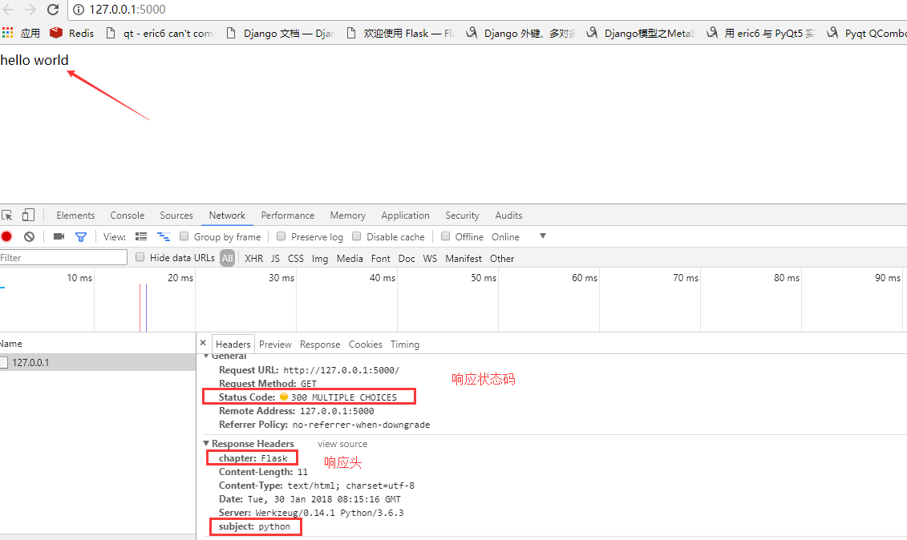

关于响应
视图函数的return值会自动转换为一个响应对象。如果返回值是一个字符串， 它被转换为该字符串为主体的、状态码为 200 的 ，MIME 类型是 text/html 的响应对象。
Flask 把返回值转换为响应对象的逻辑：
- 如果返回的是一个字符串，响应对象会用字符串数据和默认参数创建。
- 如果返回的是一个元组，且元组中的元素可以提供额外的信息。这样的元组必须是 (response, status, headers) 的形式，且至少包含一个元素。 status 值会覆盖状态代码， headers 可以是一个列表元素是元祖或字典，作为额外的消息标头值。
- 如果返回的是一个合法的响应对象，它会从视图直接返回。
我们之前都是直接返回字符串，Flask会帮我们自动创建response对象。
返回元祖：
@app.route('/')
def index():
# 第一个参数是响应体，第二个参数是响应状态码，第三个参数响应头 可以是一个字典，
# 也可以是列表元素以元祖形式[('subject','python'),( 'chapter', 2)]
# 状态码后面可以给一段文本说明，可以浏览器开发者管理工具中可以看到
# return 'hello world', '300', {'subject': 'python', 'chapter': 'Flask'}
return 'hello world', '300 python', {'subject': 'python', 'chapter': 'Flask'}

响应对象
make_response 创建响应对象
from flask import Flask, make_response
@app.route('/make_response')
def request_make_response():
# 创建一个响应对象，需要接收一个字符串为响应体
# response = make_response('hello world', 888)
response = make_response('hello python')
# 自定义状态码
response.status = '888'
# 自定义请求头
response.headers['subject'] = 'python'
# 返回响应对象
return response
返回json数据。
在前面内容中我们都是返回字符串，但是很多web开发中都是要求前后端分离的，前端一般会要求后端返回json数据。
在django的学习中我们知道返回json数据有一个JsonResponse对象，接收一个python字典作为参数。Flask中也有一个类似的对象可以返回json数据。
jsonify： 返回json格式的数据
@app.route('/request_json')
def request_json():
import json
resp = {
'a': 1,
'b': 2
}
# 普通方式返回json数据
# 将字典对象转为json字符串
# resp_json = json.dumps(resp)
# 创建一个响应对象
# response = make_response(resp_json)
# 添加响应头，表示返回的是json数据
# response.headers["Content-Type"] = "application/json"
# return response
# 将字典转换成json对象后返回
return jsonify(resp)